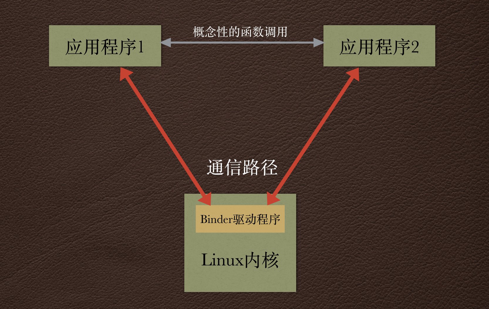

阅读《Android 编程实战》一书的抄书笔记 –> 对应书籍第7章
Binder简介
Android有一个强大的功能, 就是能够在不同应用程序之间进行通信. 绝大部分的实现都是由Binder IPC(Inter-Process Communication)进行处理的.
Android中的Binder有着悠久的历史. 最终它的名字叫做OpenBinder, 是Be公司开发的Be操作系统(BeOS). 后来被移植到Android平台, 并且进行了重写以支持应用程序间的IPC. 基本上Binder提供了在不同执行环境间绑定功能和数据的特性. Binder非常适合在Android应用程序间进行通信, 因为每个Android应用程序都运行在自己的Dalvik虚拟机里, 而每个虚拟机又是独立的运行环境.
在2009年,
Linux社区就谷歌选择Binder而非选择dbus的原因有过很长时间的争论, 因为在此之前Linux内核一直使用dbus来实现IPC机制. 最开始开发Android时,Binder成了IPC的最佳选择, 如今它已成为Android系统的一个组成成分.Linux中的dbus机制也用在许多的Android设备上, 特别是为无线接口层(Radio Interface Layer, RIL)通信以及Android 4.3以后的蓝牙通信. 但大部分IPC还是Binder.
使用Binder IPC进行通信时, 两个应用程序使用内核驱动来传递消息(如下图), 除了发送消息, Binder还提供了其他功能, 比如识别远程调用者(进程ID和用户ID), 以及当远程进程被烧死(link-to-death)时发送通知.

例如, 当系统Service(通过WindowManager管理Android所有窗口)为每个应用保持一个Binder引用时会调用这些附加函数, 当应用窗口关闭时会收到link-to-death通知.
Binder通信遵循客户端-服务端模式, 客户端使用客户端代理来处理与内核驱动程序的通信. 在服务器端, Binder框架维护了一系列Binder线程. 内核驱动会使用服务端的Binder线程把消息从客户端代理分发个接收对象. 这一点需要特别注意, 因为当通过Binder接收Service调用时, 他们并不会运行在应用程序的主线程上, 这样一来, 客户端连接远程Service的连接就不会阻塞应用的主线程.
Binder地址
使用Binder通信时, 客户端需要知道远程Binder对象的地址. 然而, Binder的设计要求只有实现类(比如要调用的Service)才知道该地址. 开发者使用Intent解析来进行寻址. 客户端使用action
字符串或者组件名(componentName)来构造Intent对象, 然后使用它初始化于远程应用程序的通信. Intent只是实际Binder地址的抽象描述, 为了能够建立通信, 还需要翻译成实际的地址.
ServiceManager是一个特殊的Binder节点, 它运行在Android系统服务内, 管理所有的地址解析, 是唯一一个有全局地址的Binder节点. 因为所有的Android组件都是用Binder进行通信, 所以它们需要使用ServiceManager进行注册.
客户端要想和Service或者其他组件进行通信, 需隐式地通过Intent查询ServiceManager来接收Binder地址.
Binder事务
在Android中, **事务(transaction)**是指一个进程发送数据到另一个进程. 在Binder上开启事务首先会在客户端调用IBinder,transact(), 然后Service收到Binder.onTranscat()方法回调.
如下演示了在客户端如何使用IBinder引用向服务端执行自定义的Binder事务
public String performCustomBinderTransaction(IBinder binder, String arg0, int arg1) throws RemoteException { |
而服务端会实现一个继承Binder类, 通过onTransact()来接收客户端的数据, 如下
public class ServerBinder extends Binder { |
如上, 因为属于作为远程服务端中实现自定义的Binder对象时没有使用AIDL. 所以这里需要自己处理onTransact()方法.
上面两个代码通过Binder IPC进行的同步双向调用. 也可在客户端执行单项的调用, 只需在客户端发送事务的方法进行相应更改即可, 如IBinder.transact()方法调用中把标识位设置为FLAG_ONEWAY, 这样就可以把第二个Parcel参数设置为null. 单项调用会提供更好的性能, 因为只需对一个Parcel对象进行编解码操作.
当然这里只是让其了解一下流程, 当真正实现进程间通信, 或者提供其他应用调用的API的时候不会直接操作这种底层的方式在两个程序之间执行事务, 而是使用对这种事务进行进一步封装的AIDL或者Messenger等.
而对于更细粒度地控制数据如何应用间发送, 使用底层binder操作事务这是正确的.
Parcel
Binder事务通常会传递事务数据, 这种数据被称为Parcel(包裹).
Android中的Parcel和Java SE中序列化对象类似, 不同之处在于, 开发者需要使用Parcelable接口实现对象的编解码工作. 该接口定义了两个编写Parcel对象的方法, 以及一个静态的不可被复写的Creator对象, 该对象用来从Parcel中读取相应的对象.
link to death
Binder的另一个特点, 允许客户端在Service终止的时候收到通知. 这就被称为link to death.
Binder的IBinder.linkToDeath()方法实现了该机制. 当客户端在onServiceConnected()方法中收到IBinder对象, 它可以用实现了IBinder.DeathRecipient接口的参数调用linkToDeath()方法. 因为Android可能在资源不足的(RAM)时被系统杀死, 在客户端注册远程被终止的监听通知会很有用.
/* |
也可以调用IBinder.pingBinder()检查远端的Binder进程是否处于活动状态. 如果结果为true, 表明远端的进程处于活跃可用的状态.
如果绑定到的是Service那么就不需要监听了, 因为断开连接时总会是伴随着ServiceConnection.onServiceDisconnected()函数被回调. 但是, 如果使用其他方式接受Binder对象, 该方法可能就有用处了.
设计API
虽然大多数的应用都不需要为第三方应用提供API, 但是说不定哪一天领导就突发奇想的想要这个结果.
可以使用Service或者ContentProvider为第三方应用开发API. 这里先介绍使用Service提供API. 在后续的篇幅会展示如何使用ContentProvider. 当实现API是, 开发者还需要考虑的因素: 是否需要处理并发请求? 每次只处理一个客户端请求是否足够? API是否只包含一个或是很少的操作? 或者是一组更加复杂的方法? 这些问题的答案将决定实现远程API最合适的方法.
另一个问题考虑的细节是否与其他开发者分享该API? 或者只是用于自己的应用? 如果是第一种情况 , 可以考虑构建一个库工程, 使用易于使用的Java API包装客户端的实现. 如果只是自己使用API, 那么可以使用Messenger或者AIDL, 下面我们将针对这两个使用展开.
AIDL
在软件工程中, 接口定义语言(Interface Definition Language,IDL)已经成为通用的术语. 是用来描述软件组件接口的特定语言. 在Android中, 该IDL被称为Android接口定义语言(AIDL). 它是纯文本文件, 使用Java类似语法编写. 但是, 编写Java接口和编写AIDL文件还有所有不同:
- 首先, 对所有的非原始数据类型参数, 需要指定如下三种类型方向指示符之一:
in,out,inout.in类型方向指示符只用于输入, 客户端不会看到Service对对象的修改.out类型表明输入对象不包含相关的数据, 但会由Service生成相关的数据.inout类型是上面两种类型的结合. 切记只使用需要的类型, 因为每种类型都有相应的消耗. - 所有用于通信的自定义都需要创建一个
AIDL文件, 用来声明该类实现了Parcelable接口.
整理一下步骤:
- 首先创建
AIDL文件, 为了客户端和服务端后续的使用. 参考链接 注意: 在IMyApiInterfaceV1.aidl文件中对CustomData进行了手动的import导入, 并且当作为参数传递的时候使用了方向指示符,因为只有原始数据类型才不需要方向指示符,因只调用其值.(有一个CustomData在下次参考链接中可以看到, 应该属于这一个步骤的) - 然后对客户端服务端进行代码实现. 参考链接. 现在客户端就可以利用
Binder调用远程的服务实现的IBinder方法. **注意:**一旦客户端实现了代码, 那么就不要在修改或者移除AIDL文件中的方法. 可以在文件末尾添加新的方法, 因为AIDL编译器会为每一个方法生成标识符, 所以不能修改现存的方法, 否则不能向后兼容老版本. 这个方法使用AIDL的缺点就是如上. 解决方案中的一种方法就是提供Java包装类, 并以库工程或者.jar文件的形式发布一遍使用. 后续会说道. - 现在可以考虑是否需要对客户端进行回调. 如果需要,那么相同的步骤创建
AIDL接口文件. 并在客户端实现接口文件. 在服务端使用的AIDL文件中添加新的方法, 这个方法用来在服务端注册一个客户端回调. 客户端的回调通过方法的参数传入, 并在客户端获取远程服务端的Binder对象进行注册方法调用.参考链接
关于客户端实现AIDL文件的时候, 在使用了oneway关键字, 这会告诉AIDL编译器该接口只是单向通信. 对调用者(本类中的Service)的响应不是必须的. 这样做会轻微的性能提升. 例如:
package com.szysky.note.ipc.aidl; |
到这里, 说明了两个应用之间传输Binder对象, 而不需要使用ServiceManager注册它. 由于只有客户端和Service知道Binder的地址, 因此它可以作为一种高效的IPC安全机制.
Messenger
使用Messenger进行远程通信, 有时会更简单, 当然使用场景是Service不需要支持并发操作时就可以选择使用Messenger信使来跨进程通信. Messenger使用Handler执行每个传入的消息, 所有的客户端的调用按顺序运行在同一个线程上.
- 服务端的实现: 在
onCreate()中构建Messenger, 然后在onBind()中返回Binder对象. 当Messenger接收到消息的时候, 它可以使用在replyTo成员变量里的Messenger对象响应客户端都请求.参考链接 - 客户端的实现: 为了可以在服务端响应回来数据, 在
onCreate()方法中, 同样构建一个Messenger作为客户端的信使. 然后在onResume()进行服务绑定, 在ServiceConnection#onServiceConnected()回调中通过获取的IBinder来还原出服务端的Messenger. 然后就可以调用其send(Message)方法向远程发送消息. 当然参数中的Message需要新建一个. 如果要做到回应客户端那么使用Message.replyTo=本地Messenger实例, 这样就可以在客户端构建的Messenger时传入的Handler.callback()接收处理.参考链接
这种方法和IntentServiec很相似, 但本例没有使用Intent, 而是使用Message触发Handler的操作. 此外, Messenger实现异步通信很方便, 并且也不需要使用BroadcastReceiver.